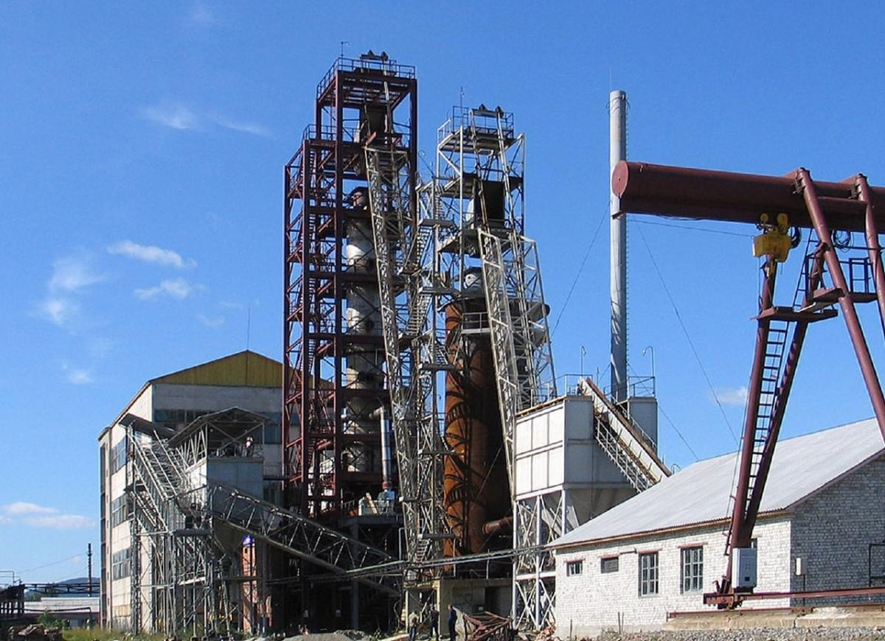

Perechin Timber and Chemical Plant Looking to the Future: Switching to Alternative Energy Sources as a Way to Save the Planet
The world around us is charging at breakneck speed: technology is developing, new scientific discoveries are emerging, manufacturers are concluding that environmentally friendly production and a search of alternative energy sources are not just some “tricks”, an up-to-date tendency, or a strong stand of the owner, but a precondition for preserving the planet for future generations.
Global Society Already Switching to Alternative Energy Sources: Indeed, the Future Has Come! But What about Ukraine?
The world-leading industrial manufacturers are trying to use the energy of the sun, wind, water, biogas, and secondary energy resources, waves and tides, gas from organic waste and sewage treatment plants, etc., to the maximal extent for the sustainable use of resources and protection of the environment. Leading scientists are also trying to find ways to efficiently use secondary energy resources, such as blast and coke gas, methane from coal deposits, emission energy potential of technological processes and others.
The International Energy Agency suggests that up to the year 2030, the share of alternative energy will be around 16% of the total world production, while the European Industry Union of renewable energy sources mentions a bigger figure - up to 35%. Leading experts claim that the future of humanity remains with alternative energy sources!
In Germany, one of the top countries that use alternative energy sources, the share of renewable energy reaches up to 40% and the production of electric energy amounts to 67%, as reported by the Federal Renewable Energy Commission.
Last year, a scientific research laboratory was established as part of the Perechin Timber and Chemical Plant, aimed at the search and usage of alternative energy sources.
Collaboration of the Perechin Timber and Chemical Plant with German Karlsruhe Institute of Technology
In December 2019, a scientific research laboratory was launched as part of the plant, where PLC specialists work in collaboration with employees of the well-known European Karlsruhe Institute of Technology on critical tasks, such as the following:
- Technologies generating additional energy from charcoal waste. It is planned to be focused not only on the needs of production but also on the creation of new products;
- Technologies with the help of which useful chemical compounds are naturally extracted from wood. It presupposes the extraction of such compounds mainly from pyrolysis gases. Besides, this is the world-leading trend!
In fact, the company is sincerely proud of an opportunity to contribute to the protection of the environment together with the oldest technological institute of Germany, the absolute authority in ecology production matters.
Perechin Timber and Chemical Plant Moves with the Times: Recognition of Customers and Environmental Specialists
Compliance with high-quality standards and environmental principles of the production has made the Perechin Timber and Chemical Plant a dependable partner to large foreign companies, including the European largest activated coal plants, the world-leading silicon and metal producers.
The products can also be found in the largest European market chains, such as LIDL, Kaufland, Carrefour, EDEKA, TESCO. The plant operates in accordance with BSCI, PEFC and ISO standards.
Up-to-Date Methods of Industrial Charcoal Production at the Perechin Timber and Chemical Plant: When Ecology Is an Axiom!
The Additional Liability Company Perechin Timber and Chemical Plant uses only fuel firewood for the production of charcoal. All raw materials are properly certified.
The production process takes place in two vertical retorts and is fully automated, which allows experts to carefully monitor chemical indicators, such as ash content, humidity, volatiles content, etc. The process itself features a closed cycle: organic compounds that appear as a result of combustion are disposed of in a special boiler, producing the energy required for further processes. That is to say, the production not just eliminates environmental pollution, but also provides the necessary energy resources for its further functioning, instead.
Such a growth vector was chosen not for the recognition by international experts or as a pursuit of world trends. Instead, it was selected with the thought of future generations and the preservation of the environment on a global scale.